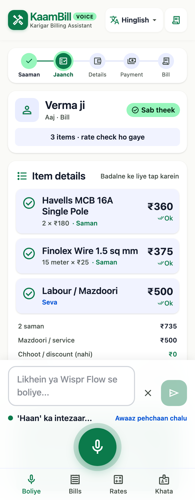
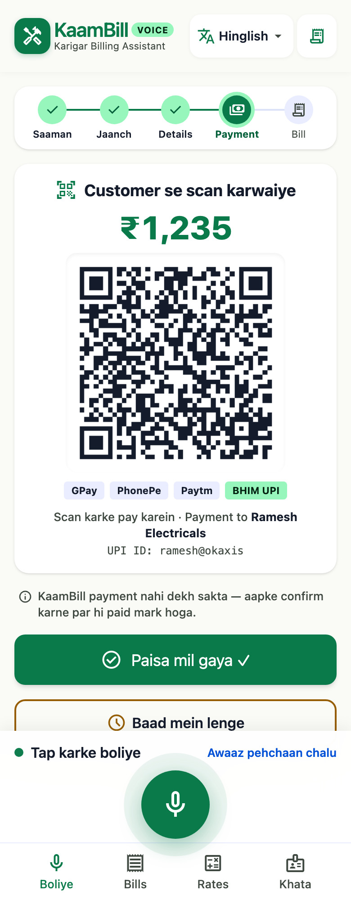

India Runs on Voice · Scaler × Wispr Flow · Track 04: Small business
Voice billing for India's electricians, plumbers and technicians. Say one sentence; get an itemized bill with a UPI QR, ready to send on WhatsApp.
1 · The problem and who has it
1 · The solution


Working prototype
field accuracy (1,661 of 1,672 fields) on the sentences scored so far
bill totals exactly right (Groq → on-device normalizer → rate-card matcher → bill)
median extraction time (90th percentile 2.4 s); about 0.4 clarifying questions per new bill
Honest scope: 125 of 208 test sentences are scored so far (Groq free-tier quota); the remaining 83 are queued. Results are in the repository (phase-6-quality-demo/eval/results).
2 · Who it is for
| Level | Who | How many | Basis |
|---|---|---|---|
| Whole sector | All unincorporated non-farm enterprises in India | About 7.3 crore establishments, about 12 crore workers | NSO, Annual Survey of Unincorporated Sector Enterprises (ASUSE) 2023-24, MoSPI |
| Addressable | Service enterprises doing repair, installation and home-service trade work | About 1 to 1.5 crore | Our estimate: about a third of enterprises are in services, and about half of those are repair, installation and home-service trades |
| First market | Solo electricians, plumbers and AC technicians with smartphones in Hindi-belt cities | About 10 to 20 lakh | Our estimate: the first segment for the Hinglish launch |
The sector figure is official (MoSPI); the addressable and first-market rows are our own estimates from the stated assumptions.
3 · What it depends on
| Depends on | Used for | If it gets costly or stops |
|---|---|---|
| Groq language model openai/gpt-oss-120b |
Turns the words into a structured bill (customer, items, quantities, labour). Only text is sent, never audio. | Retries once on the smaller gpt-oss-20b after a rate limit or timeout. The model sits behind a small provider interface, so moving to another host is a contained change. Offline, jobs queue on the phone. Totals, rates, QR and PDF are computed on the device, so saved bills keep working. |
| Wispr Flow default voice input |
Dictation into the app's text box. The user's own app: no API, no key, nothing sent to us. | Typing works exactly the same way, and the built-in browser mic is the alternative. KaamBill never needs Wispr's servers. |
| Browser speech recognition optional mic |
The mic button (Chrome and other Chromium browsers). In Chrome the audio goes to Google. | If a browser lacks it or there is no network, the text box and Wispr Flow still work. |
| UPI link and QR, WhatsApp link | Collecting payment and sharing the bill. Open standards: no payment gateway or WhatsApp API. | Nothing to pay or lose. KaamBill can't see payments, so the worker confirms "paid". |
| Hosting Render free plan |
Serves the landing page, the app and the API from one Node process. | Runs anywhere with docker compose up. Data stays on the worker's phone, so there is no database to run or lose. |
Cost to run (our estimate): about 2,800 tokens per bill (measured average 2,813). Even if every token were billed at the output price of about $0.60 per million (Groq list price, to re-check at launch) that is under ₹0.15 per bill, or under ₹20 a month for 5 bills a day. The server also limits requests per IP. Only one API key is needed (Groq); the app starts without it and shows "key not set".
4 · Launch plan
60% of active users make 5 or more voice bills a week · under 25 seconds from tapping the mic to the WhatsApp share · over 90% first-pass accuracy · over 50% of bills paid through the UPI link within 24 hours.
Try it
KaamBill was built hands-free with Wispr Flow, and workers can dictate into the app with it too, with no API key and no extra setup.